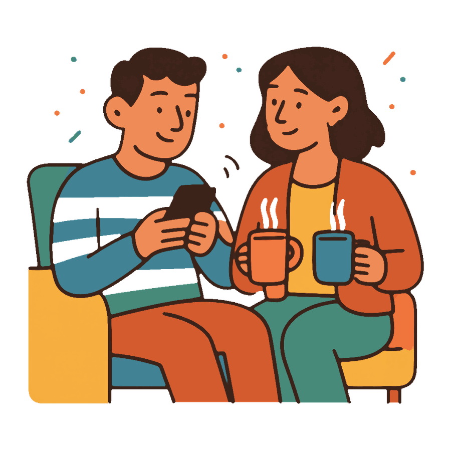

Муж вечно в телефоне: как сказать, чтобы он услышал

- Телефон в руках почти всегда про усталость и привычку, а не про равнодушие к вам.
- «Убери телефон» это просьба про запрет, поэтому она и не работает. Просите время: двадцать минут разговора.
- Маленькие островки без телефонов, ужин или полчаса вечером, держатся дольше, чем полный запрет.
Вы рассказываете, как прошёл день, а в ответ «угу» и палец, листающий ленту. За ужином телефон лежит экраном вверх между тарелками. «Муж вечно в телефоне, а я будто невидимая» это не жалоба на технику. Это про то, что вам не хватает его внимания, и вы уже не понимаете, как сказать об этом, чтобы не вышло нытьё.
Обидно тут не от экрана. Обидно от того, что человек рядом, а вас в этом вечере как будто нет.
Почему муж вечно в телефоне
Он там отдыхает, а не прячется от вас
После рабочего дня мозгу нужен режим, где ничего не требуют. Лента даёт это за секунду: не надо включаться, отвечать, быть внимательным. Это выбор не между вами и телефоном, а между усилием и его отсутствием. Просто выглядит обидно.
Привычка сильнее намерения
Телефон берут в руки не решением, а рефлексом: пауза в разговоре, скучный кадр в сериале, тишина. Он честно не замечает, сколько там просидел, и искренне удивляется вашей претензии.
Иногда это всё-таки бегство
Если дома много претензий, экран становится укрытием: там не ругают. Тогда телефон не причина, а следствие. Проверить легко: в отпуске и в гостях этот же человек прекрасно обходится без ленты.
Как сказать, чтобы он услышал
Про себя, а не про его телефон
«Ты вечно в телефоне» это диагноз, на него отвечают обороной: «я весь день работал». «Мне одиноко рядом с тобой по вечерам» оспорить невозможно, и в ответ звучит уже не оправдание, а вопрос «что сделать».
Просить не отказ, а замену
«Убери телефон» это просьба про запрет, её выполняют с кислым лицом. «Давай двадцать минут поговорим, а потом сиди сколько хочешь» это просьба про вас, её выполняют охотнее. Просите время, а не лишение.
Договориться об островках, а не о правилах на всю жизнь
Работают маленькие зоны без телефонов: ужин, первые полчаса после его прихода, час перед сном. Не весь вечер и не «никогда при мне». Островок можно выдержать, тотальный запрет нет.
Выбрать момент, когда телефон не в руке
Разговор, начатый в секунду, когда он листает ленту, обречён: вы говорите с макушкой. Утро, дорога, прогулка, кухня. Там ваши слова слышны.
«Мне не хватает тебя по вечерам. Я не хочу отбирать телефон, я хочу двадцать минут, когда мы разговариваем и смотрим друг на друга. Давай попробуем сегодня?»
Чего не делать
- Не отбирать телефон и не читать переписки. Разговор мгновенно уедет в скандал про доверие, а ваша тема так и останется неназванной.
- Не язвить «не помешала?». Сарказм слышится как презрение, а после презрения навстречу не идут.
- Не мстить тем же. Демонстративно уткнуться в свой экран приятно ровно один вечер, дальше вы просто сидите молча вдвоём.
- Не копить месяцами. Через месяц вы скажете не про сегодняшний вечер, а про всю жизнь сразу, и он услышит только объём претензий.
Подобрать слова про телефон
Расскажите Медиатору, как проходят ваши вечера. Он поможет отделить обиду от упрёка и собрать просьбу, которую слышно, без «вечно» и «всегда». А если муж тоже готов, каждый напишет боту свою версию наедине, второй её не увидит, и у каждого будет свой разбор. Первый разбор в месяц бесплатный.
Подобрать словаЕсли он согласился, но ничего не изменилось
Одного разговора обычно мало: привычка сильнее обещания. Второй заход делают не с упрёком, а с напоминанием о договорённости: «Мы говорили про двадцать минут без телефонов. Вчера не вышло. Давай сегодня?» Три-четыре спокойных повтора меняют больше, чем один эмоциональный вечер.
А если он раз за разом соглашается и ничего не делает, дело, скорее всего, не в телефоне. Тогда стоит посмотреть шире, на то, какая тема прячется за вашими мелкими ссорами. Отдельный случай, когда вместе с вниманием ушло всё остальное: разговоры, планы, прикосновения, интерес к вашей жизни. Это уже не про ленту, и такой разговор лучше не откладывать.
Частые вопросы
Как сказать мужу, что он много сидит в телефоне?
Говорите про своё, а не про его экран: «Мне одиноко рядом с тобой по вечерам, я скучаю». И добавьте одну конкретную просьбу на сегодня, например двадцать минут разговора без телефонов.
Муж всё время в телефоне, значит, разлюбил?
Чаще всего нет, обычно это усталость и привычка. Тревожный признак не сам телефон, а исчезновение всего остального: разговоров, планов, прикосновений, интереса к вашей жизни.
Стоит ли проверять его телефон?
Нет. Даже если ничего не найдёте, вы получите новую ссору и потерянное доверие. Если мучает подозрение, честнее спросить прямо, чем читать чужую переписку.
Он говорит, что я придираюсь. Что ответить?
Не спорьте о том, много это или мало. Вернитесь к своей части: «Возможно. Мне всё равно не хватает тебя по вечерам, и я прошу двадцать минут».